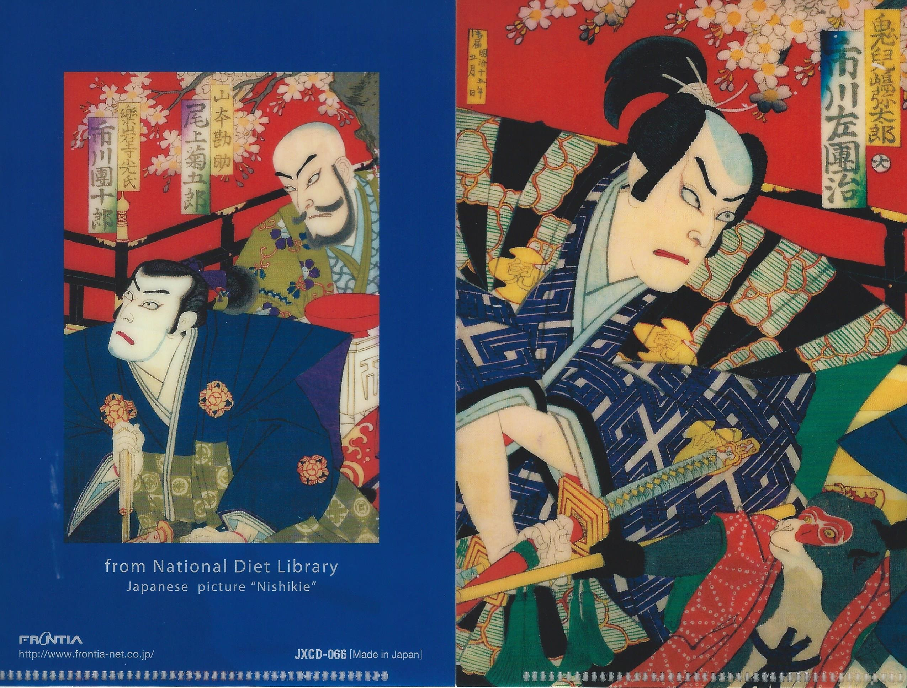
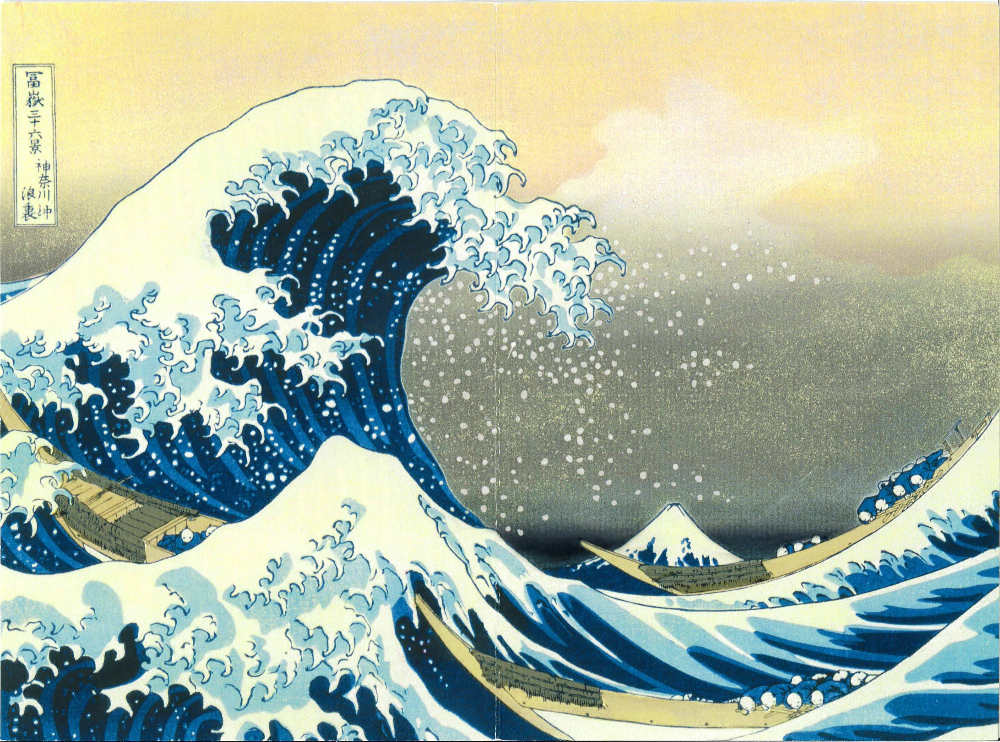

We wanted a Japanese person for the role
We would have accepted an American project leader
But a Korean person that doesn’t drink!?!
Thus began my 6 year assignment to coordinate a production line transfer from Fukuroi(袋井市), Japan to Utah and Texas.
Wondered,
What happened to the description of Japanese people that I had studied prior to the visit.
Japanese people are polite, shy, kind and most of the time indirect in communications.
This was not the beginning I had imagined.
After an 12 hour flight to Narita(成田市), we were on our way to Tokyo via Narita Express (NEX).
With that declaration, he single-handedly shook my confidence, as well as stirred national differences that I had not considered.
[For this role, I had been interviewed by a Director of R&D, the VP of R&D, and the President of Technology. They agreed that I could do this. I wanted this role, and believed that this was an opportunity that my previous manager predicted.]
Thought of going back home, crossed my mind, if there was a convenient way and if my Director and the VP hadn’t accompanied me
However, relying on past human relationship lessons1, I patiently listened to H san’s lecture on Japanese business practices for foreigners…
Japan as a nation is a tight group. One mistake and you are branded.
I was glad that the ride was less than an hour.
Start of the Project
Next morning, H san looked and acted differently than the night before. Calm, with far less words.
I was to meet with the team I was to work with. I wasn’t as concerned about the technical aspect of the transfer. Since I had worked in the industry over 15 years.
I had been chosen for the role, because I knew the Asian culture, not because of the language skills, unlike my role in Korea. However, the remaining concern of the project, communicating with my counterpart, vanished when I met K san.
We had exchanged emails prior to the visit, so I knew her written English skills rivaled natives. It turns out, she had graduated from University of Warwick and had studied British Humor.
I was home free – almost.
Memories of Visits to Japan
By suppressing my initial response and overcoming jitters of the first evening in Japan, now I can recall those 6 years of working with the Japanese team.
We would visit Japan several times a year. H San continued to come to Narita to meet us and guide us through Tokyo Station. After 3rd or 4th visit, he would let us find our way to the Marunouchi (丸の内) Hotel ourselves.
Recall fondly his favorite restaurants in Roppongi(六本木) in Tokyo, run by his classmate, and Shabu Shabu place in Hamamatsu (浜松市).
These visits taught me, among others
- the importance of making the guest/customer welcomed and feel at ease.
- know the target for the product and process, work at it and achieve it.2
- invest in and take part in the local food and culture
Wondered whether I would have had these opportunities, and completed them, if I hadn’t had religion or had adopted alcohol drinking as a social norm.
 
These days, H san and I exchange emails regularly. He also sends me, lovely, end of the year greeting cards